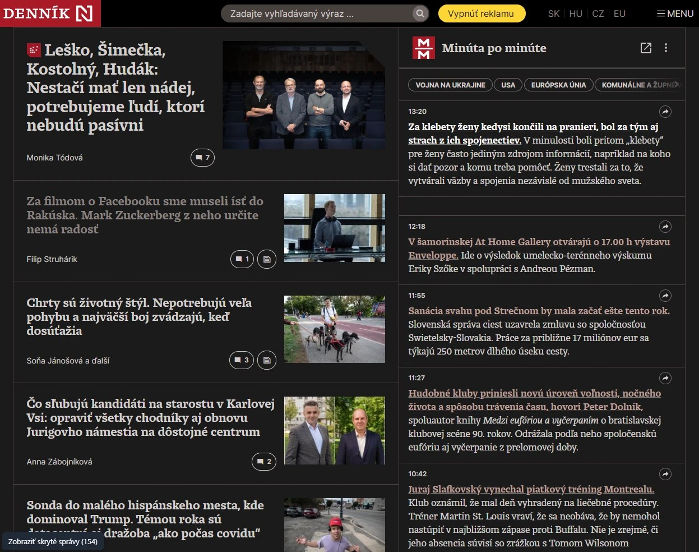
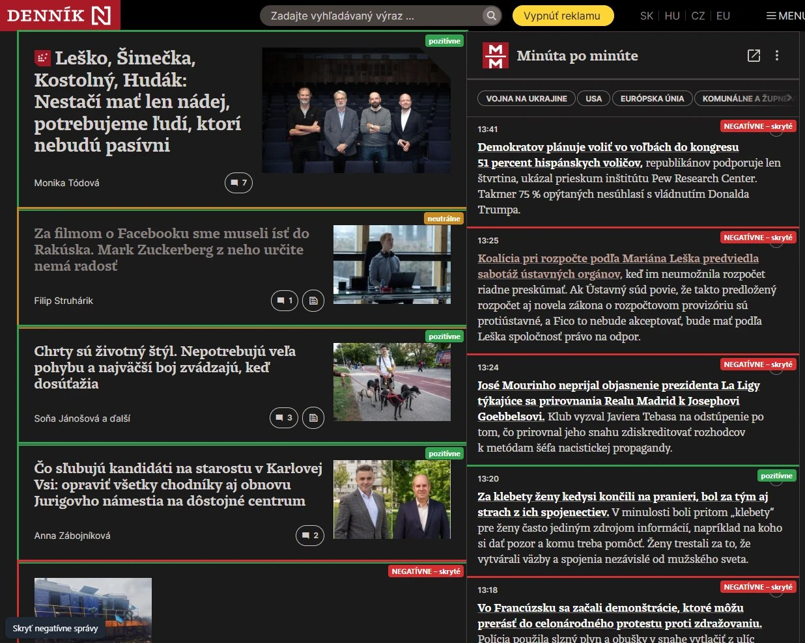
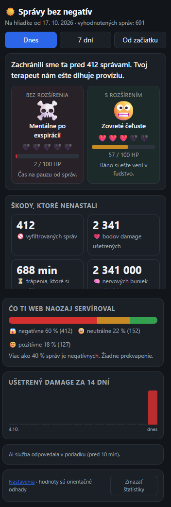

Správy bez negatív
Rozšírenie do prehliadača, ktoré skryje správy, čo ti môžu pokaziť náladu. Zostane len to, čo ťa zbytočne nezaťaží.

Ako to funguje
Žiadne nastavovanie. Otvoríš web ako zvyčajne, rozšírenie sa postará o zvyšok.
Nájde správy
Prejde titulku aj rubriku Minúta po minúte a zoberie nadpisy správ.
Ohodnotí ich AI
Každá správa dostane kategóriu (pozitívna, neutrálna, negatívna) a skóre „mentálneho damage“ od 0 do 10.
Skryje negatívne
Zostane to dobré a vecné. Hodnotenia sa pamätajú, takže pri ďalšej návšteve je všetko okamžité.
Skrýva negatívne správy
Vojny, nehody, škandály a hádky ti nevyskočia pri raňajkách. Môžeš ponechať aj neutrálne správy.
Pôvodný web na požiadanie
Jedným tlačidlom ukážeš všetko, čo sa skrylo, aj s farebným hodnotením každej správy.
Štatistiky
Koľko správ rozšírenie skrylo, koľko „damage“ ušetrilo a ako by si na tom bol bez neho.
Skrýva reklamy
Reklamné bloky na podporovaných weboch zmiznú, stránka je čistejšia.
Chrome, Edge, Firefox
Jeden zdrojový kód, tri prehliadače. Každý má vlastný balík na stiahnutie.
Otvorený kód
Všetko je na GitHube. Môžeš si overiť, čo rozšírenie robí a čo posiela.
Pozri, čo ti skryl
Tlačidlo vľavo dole zobrazí pôvodný web a každú správu označí podľa hodnotenia.
- negatívne – skryté
- neutrálne
- pozitívne


Koľko ti to ušetrilo
Kliknutím na ikonu rozšírenia uvidíš porovnanie: ako by si na tom bol bez neho a ako si na tom teraz. Čísla sú orientačné odhady, nie lekárska diagnóza.
Inštalácia
Rozšírenie zatiaľ nie je v obchodoch s doplnkami, nainštaluješ ho ručne. Trvá to asi minútu.
Chrome
- Rozbaľ stiahnutý ZIP do ľubovoľného priečinka.
- Otvor
chrome://extensionsa vpravo hore zapni Developer mode. - Klikni na Load unpacked a vyber rozbalený priečinok.
- Otvor podporovaný web. Hotovo.
Edge
- Rozbaľ stiahnutý ZIP do ľubovoľného priečinka.
- Otvor
edge://extensionsa zapni Developer mode. - Klikni na Load unpacked a vyber rozbalený priečinok.
Firefox
- Otvor
about:debugging#/runtime/this-firefox. - Klikni na Load Temporary Add-on… a vyber stiahnutý ZIP.
V Firefoxe je rozšírenie dočasné a po reštarte prehliadača zmizne. Trvalá inštalácia vyžaduje podpis cez addons.mozilla.org.
Podporované weby: dennikn.sk (vrátane www a e.dennikn.sk).
Súkromie
Rozšírenie je navrhnuté tak, aby o tebe vedelo čo najmenej.
Čo sa posiela
Nadpisy správ (alebo úvodné vety krátkych príspevkov), ich číselné ID a anonymné náhodné ID inštalácie. Slúžia len na ohodnotenie.
Čo sa neposiela
Žiadna história prehliadania, adresy navštívených stránok, cookies ani osobné údaje.
Čo ostáva u teba
Hodnotenia a štatistiky sa ukladajú iba v tvojom prehliadači a zmažeš ich jedným klikom.